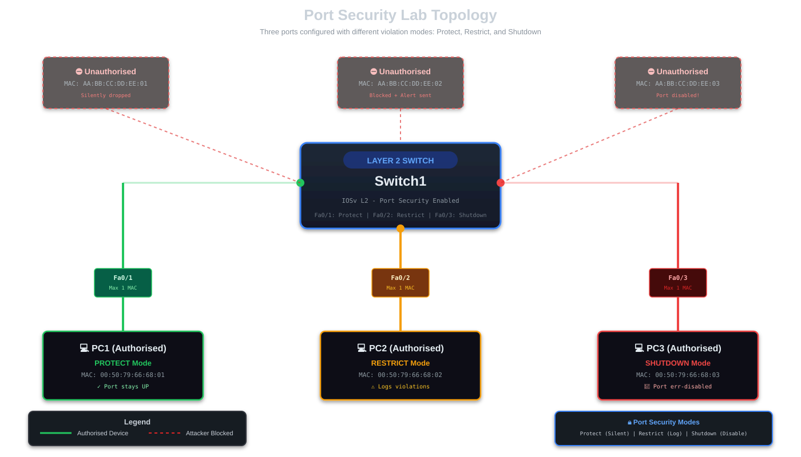

CISCO Port Security
🔬 HANDS-ON LAB EXERCISE
This is an interactive lab guide! You'll configure port security on a Cisco switch step-by-step in GNS3 or Packet Tracer. Each section includes exact commands. By the end, you'll have a secured switch that blocks Unauthorised devices using three different violation modes.
Port Security is a Layer 2 security feature that allows you to restrict which MAC addresses can communicate through each switchport. This prevents Unauthorised devices from connecting to your network and protects against MAC flooding attacks. You can specify allowed MAC addresses manually, let the switch learn them dynamically, or use "sticky" learning to automatically save learned MAC addresses to the configuration.
Real-World Scenario
TechStart Office Security Breach
You're the network administrator at TechStart, a startup company. Recently, the CEO found an Unauthorised laptop plugged into a conference room switch port, accessing the internal network. After investigation, you discover:
- 🚨 An ex-employee returned and connected their personal laptop to steal customer data
- 🔌 Open switch ports in conference rooms allow anyone to plug in
- 📊 The IT team has no visibility when Unauthorised devices connect
- ⚠️ Current security relies only on physical access (easily bypassed)
Your Mission: Implement port security to ensure only authorised devices can connect. Each port should only allow specific, approved MAC addresses. Any violation must be logged and/or blocked.
Solution: CISCO Port Security with multiple violation modes!
Lab Setup
📝 This is a hands-on lab guide! You'll need to build this topology in GNS3 or Packet Tracer as you follow along.
Required Equipment
- GNS3 or Cisco Packet Tracer as the network emulation software
- 1x CISCO Layer 2 switch IOSvL2 15.2+ (or Packet Tracer switch)
- 3x Virtual PC simulators (VPCS in GNS3, or PCs in Packet Tracer)
Topology Diagram
Build the following topology in your lab environment:

Port Assignments
📌 authorised Devices
- PC1: Fa0/1 - MAC: 00:50:79:66:68:01 - PROTECT mode
- PC2: Fa0/2 - MAC: 00:50:79:66:68:02 - RESTRICT mode
- PC3: Fa0/3 - MAC: 00:50:79:66:68:03 - SHUTDOWN mode
⛔ Simulated Attackers (Unauthorised)
- We'll simulate Unauthorised MAC addresses to test each violation mode
- You'll see different behaviors: silent drops, logs, and port shutdowns
Understanding Port Security
Before we configure, let's understand the three violation modes:
Violation Modes Comparison
| Mode | Traffic | Port Status | SNMP Alert | Syslog | Counter |
|---|---|---|---|---|---|
| Protect | Dropped | ✓ Stays UP | ✗ No | ✗ No | ✗ No increment |
| Restrict | Dropped | ✓ Stays UP | ✓ Yes | ✓ Yes | ✓ Increments |
| Shutdown | Blocked | ✗ err-disabled | ✓ Yes | ✓ Yes | ✓ Increments |
Initial Switch Configuration
First, let's set up the switch with a hostname and configure the three ports as access ports:
Basic Switch Setup
Switch> enable Switch# configure terminal Switch(config)# hostname Switch1 Switch1(config)# ! Configure Fa0/1 as access port Switch1(config)# interface FastEthernet0/1 Switch1(config-if)# description PC1 - Employee Workstation Switch1(config-if)# switchport mode access Switch1(config-if)# switchport access vlan 1 Switch1(config-if)# exit ! ! Configure Fa0/2 as access port Switch1(config)# interface FastEthernet0/2 Switch1(config-if)# description PC2 - Manager Workstation Switch1(config-if)# switchport mode access Switch1(config-if)# switchport access vlan 1 Switch1(config-if)# exit ! ! Configure Fa0/3 as access port Switch1(config)# interface FastEthernet0/3 Switch1(config-if)# description PC3 - Server Room Switch1(config-if)# switchport mode access Switch1(config-if)# switchport access vlan 1 Switch1(config-if)# exit Switch1(config)# end Switch1# write memory
✅ Verify: Check that interfaces are in access mode:
Switch1# show interfaces FastEthernet0/1 switchport Name: Fa0/1 Switchport: Enabled Administrative Mode: static access Operational Mode: static access
Configuring PROTECT Mode (Fa0/1)
Protect mode silently drops Unauthorised traffic. The port stays up, but no alerts are generated. This is useful when you want basic protection without administrative overhead.
Configure Protect Mode on Fa0/1
Switch1# configure terminal Switch1(config)# interface FastEthernet0/1 Switch1(config-if)# switchport port-security Switch1(config-if)# switchport port-security maximum 1 Switch1(config-if)# switchport port-security violation protect Switch1(config-if)# switchport port-security mac-address 0050.7966.6801 Switch1(config-if)# exit Switch1(config)# end Switch1# write memory
What this does:
- Enables port security on Fa0/1
- Allows maximum of 1 MAC address
- Sets violation mode to "protect"
- Statically configures the allowed MAC address
Configuring RESTRICT Mode (Fa0/2)
Restrict mode drops Unauthorised traffic AND generates alerts (SNMP trap + syslog). The violation counter increments. This provides visibility into security events.
Configure Restrict Mode on Fa0/2
Switch1# configure terminal Switch1(config)# interface FastEthernet0/2 Switch1(config-if)# switchport port-security Switch1(config-if)# switchport port-security maximum 1 Switch1(config-if)# switchport port-security violation restrict Switch1(config-if)# switchport port-security mac-address 0050.7966.6802 Switch1(config-if)# exit Switch1(config)# end Switch1# write memory
Important: With restrict mode, check your syslog regularly to monitor violation attempts. In production, configure a syslog server to collect these alerts.
Configuring SHUTDOWN Mode (Fa0/3)
Shutdown mode is the most secure (and default) option. When a violation occurs, the port immediately goes to err-disabled state, completely blocking all traffic. This requires manual intervention to recover.
Configure Shutdown Mode on Fa0/3
Switch1# configure terminal Switch1(config)# interface FastEthernet0/3 Switch1(config-if)# switchport port-security Switch1(config-if)# switchport port-security maximum 1 Switch1(config-if)# switchport port-security violation shutdown Switch1(config-if)# switchport port-security mac-address 0050.7966.6803 Switch1(config-if)# exit Switch1(config)# end Switch1# write memory
Note: Shutdown is the default mode, so specifying it is optional. We include it here for clarity.
Verifying Port Security Configuration
Now let's verify our configuration is correct:
Essential Verification Commands
! Check port security summary
Switch1# show port-security
Secure Port MaxSecureAddr CurrentAddr SecurityViolation Security Action
(Count) (Count) (Count)
---------------------------------------------------------------------------
Fa0/1 1 1 0 Protect
Fa0/2 1 1 0 Restrict
Fa0/3 1 1 0 Shutdown
---------------------------------------------------------------------------
! Check specific interface details
Switch1# show port-security interface FastEthernet0/1
Port Security : Enabled
Port Status : Secure-up
Violation Mode : Protect
Maximum MAC Addresses : 1
Total MAC Addresses : 1
Configured MAC Addresses : 1
Sticky MAC Addresses : 0
Security Violation Count : 0
! View secure MAC addresses
Switch1# show port-security address
Secure Mac Address Table
-----------------------------------------------------------------------------
Vlan Mac Address Type Ports Remaining Age
(mins)
---- ----------- ---- ----- -------------
1 0050.7966.6801 SecureConfigured Fa0/1 -
1 0050.7966.6802 SecureConfigured Fa0/2 -
1 0050.7966.6803 SecureConfigured Fa0/3 -
-----------------------------------------------------------------------------
✅ Success indicators:
- Port Status shows "Secure-up" (port is up and secure)
- Violation Mode matches what you configured
- MAC addresses are shown in the secure address table
- Violation Count is 0 (no violations yet)
Testing Violation Scenarios
Now the interesting part - let's test what happens when Unauthorised devices try to connect!
Test 1: Protect Mode (Fa0/1)
When an Unauthorised MAC tries to send traffic on Fa0/1:
! The Unauthorised traffic is silently dropped ! Port remains UP and operational ! No syslog messages generated ! Violation counter does NOT increment Switch1# show port-security interface Fa0/1 Port Security : Enabled Port Status : Secure-up ← Still UP! Violation Mode : Protect Security Violation Count : 0 ← No increment
Observation: authorised traffic continues normally. Unauthorised frames simply disappear. Great for minimal administrative overhead!
Test 2: Restrict Mode (Fa0/2)
When an Unauthorised MAC tries to send traffic on Fa0/2:
! Unauthorised traffic is dropped ! Port remains UP and operational ! SNMP trap is sent ! Syslog message is generated ! Violation counter INCREMENTS Switch1# show port-security interface Fa0/2 Port Security : Enabled Port Status : Secure-up ← Still UP! Violation Mode : Restrict Security Violation Count : 3 ← Incremented! ! Check syslog for violation messages Switch1# show logging | include VIOLATION %PORT_SECURITY-2-PSECURE_VIOLATION: Security violation occurred, caused by MAC address aabb.ccdd.ee02 on port FastEthernet0/2.
Observation: You get full visibility into security events while keeping the port operational. Perfect for monitoring!
Test 3: Shutdown Mode (Fa0/3)
When an Unauthorised MAC tries to send traffic on Fa0/3:
! Port immediately goes to err-disabled state ! ALL traffic is blocked (authorised and Unauthorised) ! SNMP trap is sent ! Syslog message is generated ! Violation counter increments ! Manual intervention required to recover Switch1# show port-security interface Fa0/3 Port Security : Enabled Port Status : Secure-shutdown ← err-disabled! Violation Mode : Shutdown Security Violation Count : 1 Switch1# show interface Fa0/3 status Port Name Status Vlan Duplex Speed Type Fa0/3 PC3 - Server Room err-disabled 1 auto auto 10/100BaseTX
Observation: Maximum security - the port is completely disabled. Nothing can pass until you manually recover it.
Recovering from err-disabled State
When a port goes to err-disabled due to a shutdown violation, you must manually recover it:
Manual Port Recovery
! First, disconnect the Unauthorised device! ! Then recover the port: Switch1# configure terminal Switch1(config)# interface FastEthernet0/3 Switch1(config-if)# shutdown Switch1(config-if)# no shutdown Switch1(config-if)# exit Switch1(config)# end ! Verify port is back up Switch1# show interface Fa0/3 status Port Name Status Vlan Duplex Speed Type Fa0/3 PC3 - Server Room connected 1 a-full a-100 10/100BaseTX
Automatic Recovery (Optional)
You can configure the switch to automatically recover err-disabled ports after a timeout:
Enable Auto-Recovery
Switch1# configure terminal Switch1(config)# errdisable recovery cause psecure-violation Switch1(config)# errdisable recovery interval 300 Switch1(config)# end Switch1# write memory ! Ports will automatically recover after 300 seconds (5 minutes) ! Useful in production to reduce manual intervention
⚠️ Warning: Only use auto-recovery if you have monitoring in place. Otherwise, attackers can just wait and reconnect!
Sticky MAC Addresses
Instead of manually entering MAC addresses, you can use "sticky" learning. The switch learns MACs dynamically and automatically saves them to the running configuration.
Configuring Sticky MAC Learning
Switch1# configure terminal Switch1(config)# interface FastEthernet0/4 Switch1(config-if)# switchport mode access Switch1(config-if)# switchport port-security Switch1(config-if)# switchport port-security maximum 2 Switch1(config-if)# switchport port-security mac-address sticky Switch1(config-if)# switchport port-security violation restrict Switch1(config-if)# exit Switch1(config)# end ! Now connect a device - its MAC will be learned and added to config Switch1# show running-config interface FastEthernet0/4 interface FastEthernet0/4 switchport mode access switchport port-security maximum 2 switchport port-security switchport port-security violation restrict switchport port-security mac-address sticky switchport port-security mac-address sticky 0050.7966.6804 ! ! Don't forget to save! Switch1# write memory
When to use sticky MACs:
- ✓ Server ports with static devices
- ✓ IP phone ports (phone + PC = 2 MACs)
- ✓ Simplifies deployment - no need to manually collect MAC addresses
- ✗ Not ideal for conference rooms or guest areas
Security Best Practices
- Start with Restrict Mode: Deploy restrict mode first to understand violation patterns before using shutdown
- Use Shutdown for Critical Ports: Server ports, infrastructure ports, and data center connections
- Monitor Violation Counters: Regularly check
show port-securityfor anomalies - Document Approved MACs: Keep a database of which MACs should be on which ports
- Combine with 802.1X: For the ultimate security, use port security with 802.1X authentication
- Disable Unused Ports: Shutdown ports that aren't in use and put them in an unused VLAN
- Use Sticky for Servers: Servers rarely change NICs, making sticky learning perfect
- Configure Syslog: Send logs to a central syslog server for analysis
Troubleshooting Common Issues
Problem: Port security won't enable
Error: "Command rejected: FastEthernet0/1 is a dynamic port."
Solution: Port must be manually configured as access or trunk. Disable DTP:
Switch1(config-if)# switchport mode access Switch1(config-if)# switchport nonegotiate
Problem: Can't configure more than 1 MAC on an IP phone port
Solution: IP phones need special configuration:
Switch1(config-if)# switchport mode access Switch1(config-if)# switchport access vlan 10 Switch1(config-if)# switchport voice vlan 20 Switch1(config-if)# switchport port-security maximum 3 ! Allows: Phone MAC, PC MAC, and one spare
Problem: Port goes err-disabled frequently
Cause: Usually a legitimate device with multiple MAC addresses (like a VM host)
Solution: Increase the maximum or switch to restrict mode:
Switch1(config-if)# switchport port-security maximum 5 Switch1(config-if)# switchport port-security violation restrict
Summary
In this guide, we've covered:
- ✓ Understanding port security and why it's critical
- ✓ Three violation modes: Protect, Restrict, and Shutdown
- ✓ Configuring static MAC addresses on ports
- ✓ Using sticky MAC learning for automation
- ✓ Testing and verifying security violations
- ✓ Recovering from err-disabled ports
- ✓ Production best practices and troubleshooting
Real-World Impact: Port security is your first line of defense against:
- Unauthorised physical access attempts
- MAC flooding attacks
- Rogue devices on the network
- Social engineering attacks via physical ports
Remember: Port security is not a silver bullet. It's part of a defense-in-depth strategy. Combine it with 802.1X, VLANs, ACLs, and proper physical security for comprehensive protection!